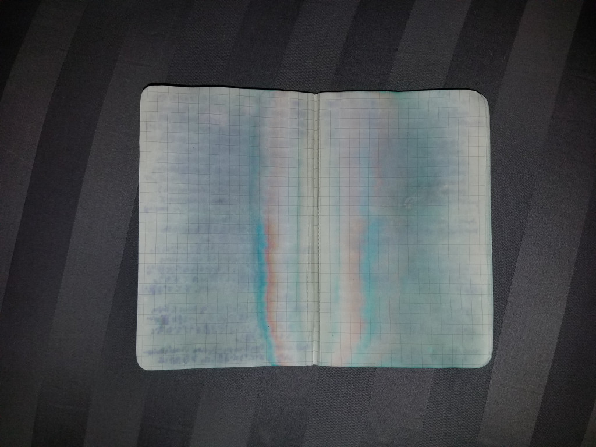
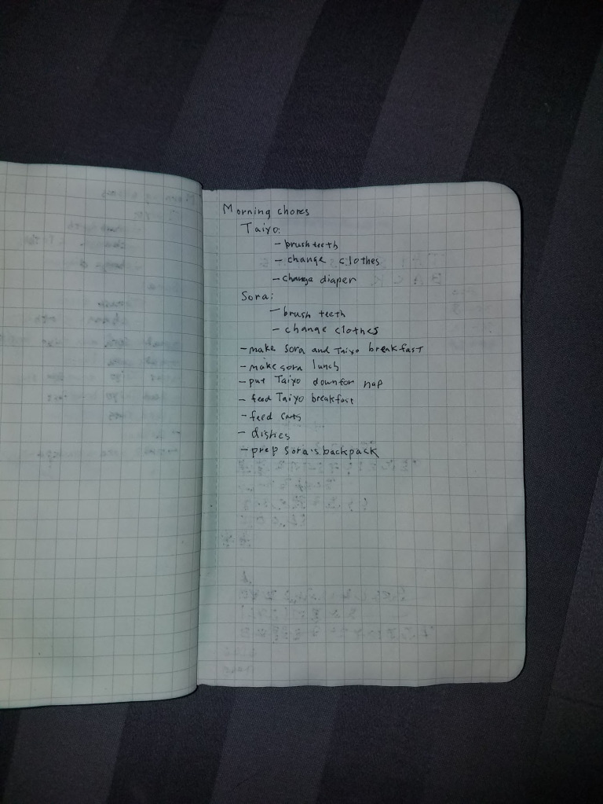
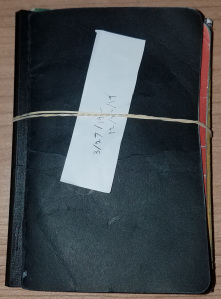

My Bullet Journal Setup
In march of 2019, I read The Bullet Journal Method: Track the Past, Order the Present, Design the Future by Ryder Carroll. In the book, Ryder discusses his process of using journaling to help focus one’s life. After reading the book, I took up the practice as well, taking a fair bit of liberty on the process. I’ll talk about my review of the book, as well as the process I arrived at.
Review of the Book #
As is the case with many self-help books, this one could have been shorter. But having stories helps illustrate the major lessons, and helps embed the ideas in our minds.
The main philosophy of bullet journaling comes down to two techniques: jotting down notes to help one recall the important events, and periodically reviewing those notes to reflect and re-focus on what’s valuable.
Bullet Journaling does this by creating several reoccurring situations where one should review the notes and aggregate them. By re-writing the same notes over and over again as you aggregate them over to weekly or monthly summaries, the writer will eventually remove the ones that are unimportant, as it’s time consuming to copy over notes or to-dos.
The notes themselves are flexible and are allowed to contain a combination of to-dos, life events, and thoughts. One should annotate these different types with a different symbol.
I think skimming is enough to get enough context to reproduce or try the system out for yourself. You may want to read the whole book if you find that the system isn’t helping you in the way you want it.
My Bullet Journal Learnings and Setup #
My Notes #
When I started bullet journaling, I was faithfully following the system as prescribed. Eventually, I’ve landed on the following system:
- 1 page at the beginning of the book for the big life goals
- 1 page at the beginning of the book for to-do at some point in the future (that year)
- 1-2 sheets for a giant to-do list to accomplish within the duration of the notebook
- 1-2 sheets for a giant to-do list for the week
- One category for work
- One category for home / personal
- 1-2 sheets per day
- Instead of taking short notes, my notes are detailed, and usually span one or two sentences per event.
- A few note categories including:
- to-do (a dot that I cross out with an X when done, or a > when I need to push it out to the future)
- event (a triangle)
- Most notes generally have a number on the left-hand column that documents the amount of time I spent on the task (60m, 90m, 2h)
Here’s some more context on why I landed on this approach.
1 life goal page, 2 future pages, and 2 book pages #
This is pretty identical with what the Bullet Journal method recommends.
1 life goal page with 3-4 goals of what to focus on broadly really does help keep me focused. It’s helpful to see that as the first page I flip to every time I open the journal. For 2019, this has helped me keep a much sharper focus on learning guitar and piano better, as well as improving my Japanese. Previously, I’d find myself wandering to whatever project was at the top of my mind at the time, which helps me feel productive short-term, but doesn’t align with what I really want to accomplish.
2 future pages works well just to document cool ideas or smaller projects in the future. For me, this includes conferences I’d like to speak at, activities like search and rescue, and interesting software projects. On the downside, I really don’t do anything here except for add to the list, which at some point will probably expand over 2 pages. But maybe that’s a good reason to cull it.
2 book pages documents tasks I should complete within the duration of the book. This section has generally gone unfinished, as my weekly to-do list is already too long for me to accomplish. But once in a while I will pull from this list and move it to my weekly list. Professionally, this has helped remind me what long-term projects I own and should deliver on. Examples for me in this section include driving a revamped interview process at work, or investigating the value of further investment in a tool my team owns.
Weekly to-do list #
My weekly to-do list and my daily updates are the sections I refer to the most. The weekly list has been very helpful, especially professionally. As a manager, I’m often asked to own a bunch of fairly random projects and to-dos, where I needed some sort of project management just for my own day-to-day. Bullet journaling provides just enough organization to help me keep track of those action items, and keeps me focused on those before working on others.
My weekly ritual consists of copying those over, as well as aggregating to-dos left over from the individual days. A lot of my to-dos are small, and I typically clear them out the following Monday.
Having a to-do for the week personally has also been valuable. Again, the primary value there is to have a queue of projects so I can finish one before moving on, instead of just moving to a different project because it’s at the top of my head. It also helps to have a list of projects, as I typically only have 1-2 hours of free time a day. Often that free time will be spent on browsing the internet or watching TV unless I dive into an activity within 5-10 minutes of it starting (right after my kids go to bed).
Examples of what I put in this section include:
- setup a meeting with so-and-so team on project X
- personal: author a svn server setup using terraform
- personal: fix a bug with X
Daily Notes #
My daily notes are probably what differs the most from the standard bullet journal.
Using full paragraphs in the daily notes #
One major difference: Every bullet is a 1-2 sentence paragraph, rather than a concise one liner.
I started with the one-liner, but found when reviewing a month or two later, I had very little idea what that note even pertained to. One major aspect that attracted me to bullet journaling was a written log where I can recall exactly where my time went to that day. This is generally useless to me if I can’t recall why that was important, what the impact of the event was, or my thoughts at the time on it.
Breaking that rule has made my bullet journaling much more time-consuming: it takes me 15-20 minutes of the day across the day to write down my full notes. But the benefit has been significant: I’m able to recall very specific milestones my kids achieved, remember important details in my discussions, and remember why a task was important, even six months down the line. Certainly worth taking time out of my day to enjoy these memories years from now.
Writing down the time a task took #
One other difference (or slight alteration) is writing down the amount of time each event took. I do this by writing down the explicit amount on completion of the task.
No page numbers #
One minor difference is I don’t write down page numbers. I’ve found little to no value in having them. There’s a technique in bullet journaling to extend sections by adding random pages in the book, and keeping track of these sections by writing down all the pages in a table of contents in the beginning, but I’ve found I’ve almost never had the need to extend a section. Instead, I’ll pre-allocate an extra page, and just suffer the random empty page if I over-allocate.
Journal and Writing Utensils #
I’ve experimented with a few different types of notebooks and writing utensils. I’ve currently settled on:
Below I have some detailed thoughts.
Notebook Size #
I wanted a notebook size that was fairly portable: I don’t always carry a bag with me, and it’s very inconvenient to always have one of your hands full with a notebook. If I don’t have the notebook with me at all times, I won’t be able to take notes or jot down thoughts at that precise moment.
After trying some larger and smaller sizes, I settled on the pocket format (3.5 by 5.5 inches), as many companies produce notebooks at that size. I originally wanted to standardize on A6 but it’s harder to find variants with a smaller page count. Anything smaller than the pocket size results in a day’s notes taking several pages.
Once I decided on the format, the next factor was page count. I’ve found with detailed notes a day can consume 2 pages. As the majority of pocket notebooks (such as field notes) are 48 pages (24 sheets), I would find myself going through a notebook every couple of weeks. This was a lot of work to rewrite the same front 5 pages over and over again. I was looking to rotate my books at most once a month, so I landed on the Moleskine Cahier, which has 64 pages.
Grid for Notebook Lines #
For the line format, most journals offer plain, lined, grid, or dotted. I don’t have a strong preference between the three, but most notebook manufacturers have a much smaller grid than lines, which works well with my smaller handwriting.
This also motivated the decision for the cahier above: I would have preferred more pages (such as with the Moleskine volant) but they did not have a grid option, and the lines are quite large.
Pen: Something Waterproof and Fine #
As my notebook side is quite small, I wanted a way to fit as much content on a page as possible. A part of that means choosing smaller lines, which means choosing a finer pen to ensure that what you write is legible.
I looked for the finest pens on Amazon, and tried a few out. I landed on the Pilot G-Tec-C as it provides very fine, clear lines. For a while I tried the Steadler fineliner (0.3mm width). It was working well, but I decided against using it further when I accidentally dropped my bullet journal in my bathtub, and all the pages written with the fineliner was completely illegible. The Pilot G-Tec-C pages were fine.
Here’s a few photos to help you understand the horror:

Pages written with the Steadler fineliner

Wet notebook with the G-Tec-C Pen
Summary and Final Thoughts #
Overall this has been a life-changing book and practice for me: I’m a lot more focused on what I actually want to do, and It’s helping me recall some truly precious moments in my life.
The vanilla bullet journaling did not work well for me due to it’s terseness, so there’s definitely a need to customize to suit your needs and desires. And it’s good that Carroll calls that out in his book.
And as a finishing note, here’s a photo of 9 months of my bullet journals, bundled up, and summarizing my 2019 year.
